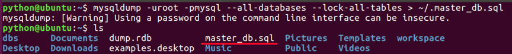
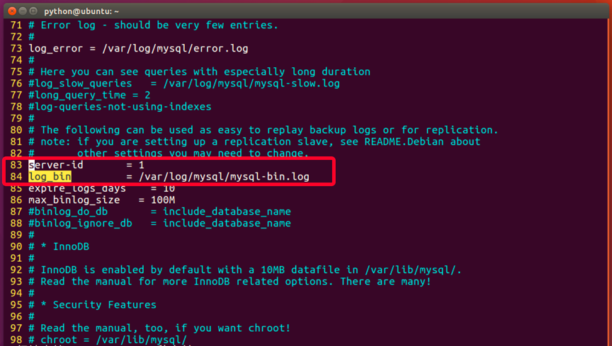
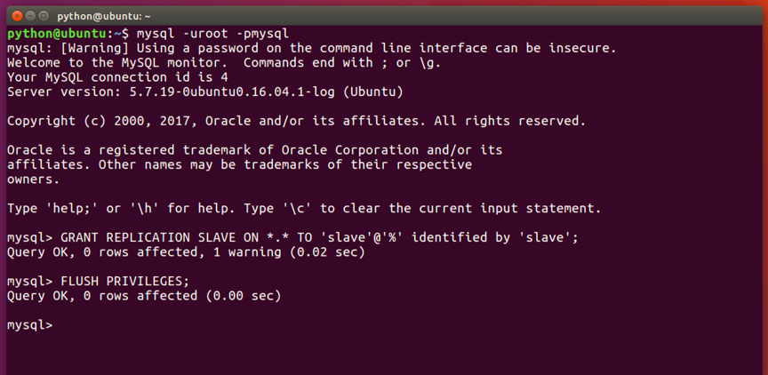
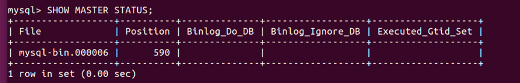
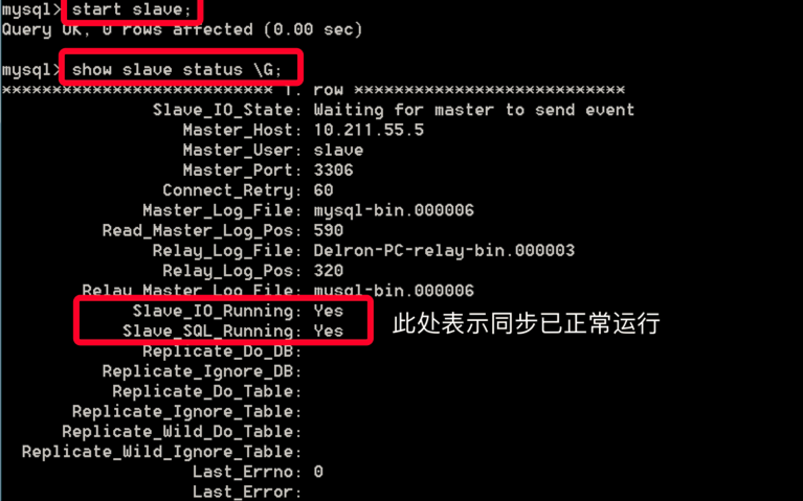

MySQL主从同步
1. 主从同步的定义
主从同步使得数据可以从一个数据库服务器复制到其他服务器上，在复制数据时，一个服务器充当主服务器（master），其余的服务器充当从服务器（slave）。因为复制是异步进行的，所以从服务器不需要一直连接着主服务器，从服务器甚至可以通过拨号断断续续地连接主服务器。通过配置文件，可以指定复制所有的数据库，某个数据库，甚至是某个数据库上的某个表。
使用主从同步的好处：
（1） 通过增加从服务器来提高数据库的性能，在主服务器上执行写入和更新，在从服务器上向外提供读功能，可以动态地调整从服务器的数量，从而调整整个数据库的性能。
（2）提高数据安全，因为数据已复制到从服务器，从服务器可以终止复制进程，所以，可以在从服务器上备份而不破坏主服务器相应数据
（3） 在主服务器上生成实时数据，而在从服务器上分析这些数据，从而提高主服务器的性能
2. 主从同步的机制
Mysql服务器之间的主从同步是基于二进制日志机制，主服务器使用二进制日志来记录数据库的变动情况，从服务器通过读取和执行该日志文件来保持和主服务器的数据一致。
在使用二进制日志时，主服务器的所有操作都会被记录下来，然后从服务器会接收到该日志的一个副本。从服务器可以指定执行该日志中的哪一类事件（譬如只插入数据或者只更新数据），默认会执行日志中的所有语句。
每一个从服务器会记录关于二进制日志的信息：文件名和已经处理过的语句，这样意味着不同的从服务器可以分别执行同一个二进制日志的不同部分，并且从服务器可以随时连接或者中断和服务器的连接。
主服务器和每一个从服务器都必须配置一个唯一的ID号（在my.cnf文件的[mysqld]模块下有一个server-id配置项），另外，每一个从服务器还需要通过CHANGE MASTER TO语句来配置它要连接的主服务器的ip地址，日志文件名称和该日志里面的位置（这些信息存储在主服务器的数据库里）
3. 配置主从同步的基本步骤
有很多种配置主从同步的方法，可以总结为如下的步骤：
（1） 在主服务器上，必须开启二进制日志机制和配置一个独立的ID
（2） 在每一个从服务器上，配置一个唯一的ID，创建一个用来专门复制主服务器数据的账号
（3） 在开始复制进程前，在主服务器上记录二进制文件的位置信息
（4） 如果在开始复制之前，数据库中已经有数据，就必须先创建一个数据快照（可以使用mysqldump导出数据库，或者直接复制数据文件）
（5） 配置从服务器要连接的主服务器的IP地址和登陆授权，二进制日志文件名和位置
4. 详细配置主从同步的方法
1）安装mysql
我们在ubuntu中已经有安装一台mysql了，现在使用docker安装另外一台mysql
获取mysql的镜像，主从同步尽量保证多台mysql的版本相同，我们的ubuntu中存在的mysql是5.7.22版本，所以获取5.7.22版本的镜像
docker image pull mysql:5.7.22
或
docker load -i mysql_docker_5722.tar
运行mysql docker镜像，需要在宿主机中建立文件目录用于mysql容器保存数据和读取配置文件。
在家目录中（/home/python）中创建目录，将mysql的配置文件放到此目录中
cd ~
mkdir mysql_slave
cd mysql_slave
mkdir data
cp -r /etc/mysql/mysql.conf.d ./
我们要将docker运行的mysql作为slave来运行，开启前需要修改配置文件。
编辑 ~/mysql_slave/mysql.conf.d/mysqld.cnf 文件，修改
port = 8306
general_log = 0
server-id = 2
我们让此台mysql运行在8306端口上，且mysql编号为2
创建docker容器
docker run --name mysql-slave -e MYSQL_ROOT_PASSWORD=mysql -d --network=host -v /home/python/mysql_slave/data:/var/lib/mysql -v /home/python/mysql_slave/mysql.conf.d:/etc/mysql/mysql.conf.d mysql:5.7.22
- MYSQL_ROOT_PASSWORD 是创建mysql root用户的密码
测试，在ubuntu中使用mysql命令尝试连接docker容器中的mysql
mysql -uroot -pmysql -h 127.0.0.1 --port=8306
2）备份主服务器原有数据到从服务器
如果在设置主从同步前，主服务器上已有大量数据，可以使用mysqldump进行数据备份并还原到从服务器以实现数据的复制。
在主服务器Ubuntu上进行备份，执行命令：
mysqldump -uroot -pmysql --all-databases --lock-all-tables > ~/master_db.sql

-u ：用户名
-p ：示密码
--all-databases ：导出所有数据库
--lock-all-tables ：执行操作时锁住所有表，防止操作时有数据修改
~/master_db.sql :导出的备份数据（sql文件）位置，可自己指定
在docker容器中导入数据
mysql -uroot -pmysql -h127.0.0.1 --port=8306 < ~/master_db.sql
3）配置主服务器master（Ubuntu中的MySQL）
编辑设置mysqld的配置文件，设置log_bin和server-id
sudo vim /etc/mysql/mysql.conf.d/mysqld.cnf

重启mysql服务
sudo service mysql restart
登入主服务器Ubuntu中的mysql，创建用于从服务器同步数据使用的帐号
mysql –uroot –pmysql
GRANT REPLICATION SLAVE ON *.* TO 'slave'@'%' identified by 'slave';
FLUSH PRIVILEGES;

获取主服务器的二进制日志信息
SHOW MASTER STATUS;

File为使用的日志文件名字，Position为使用的文件位置，这两个参数须记下，配置从服务器时会用到。
4）配置从服务器slave （docker中的mysql）
进入docker
docker exec -it cd1513c6afce /bin/bash
进入docker中的mysql
mysql -uroot -pmysql -h 127.0.0.1 --port=8306
执行
change master to master_host='127.0.0.1', master_user='slave', master_password='slave',master_log_file='mysql-bin.000006', master_log_pos=590;
- master_host：主服务器Ubuntu的ip地址
- master_log_file: 前面查询到的主服务器日志文件名
- master_log_pos: 前面查询到的主服务器日志文件位置
启动slave服务器，并查看同步状态
start slave;
show slave status \G
